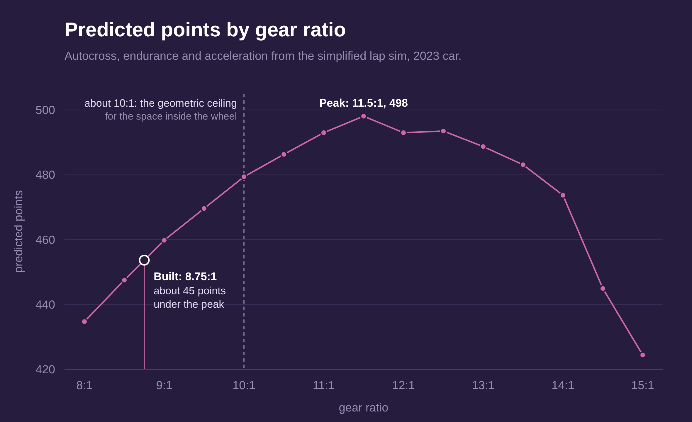
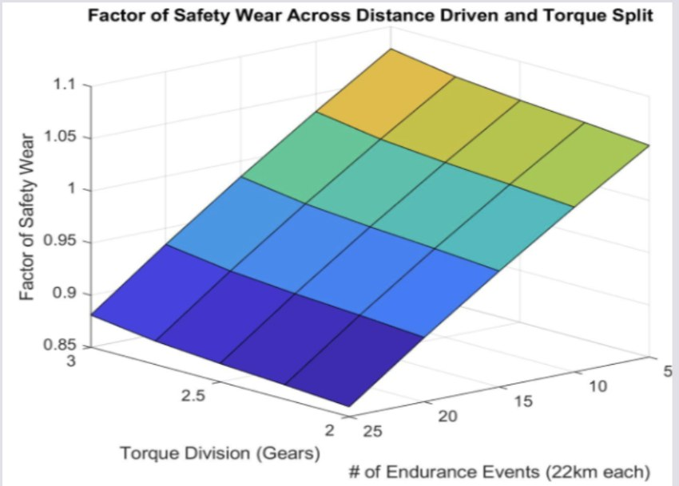
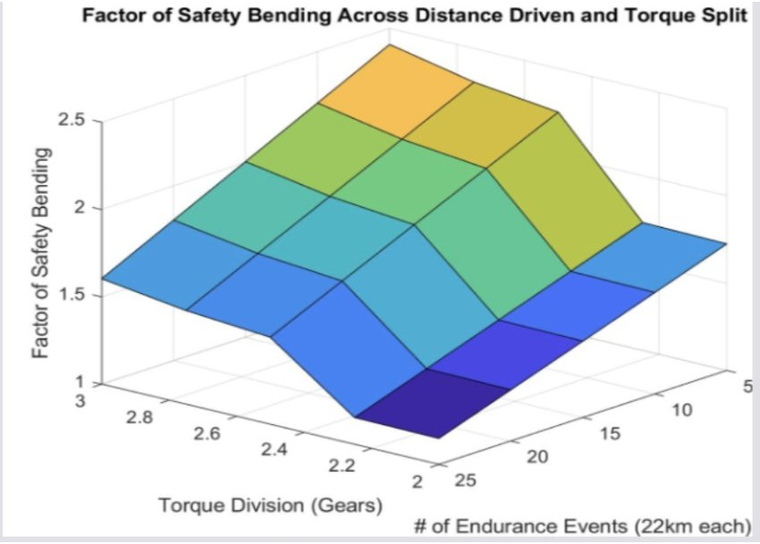
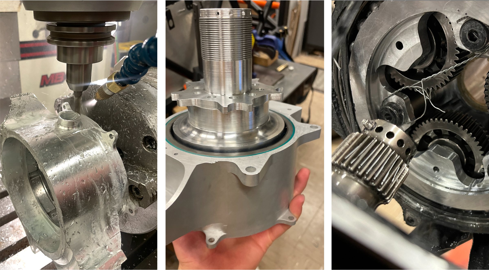
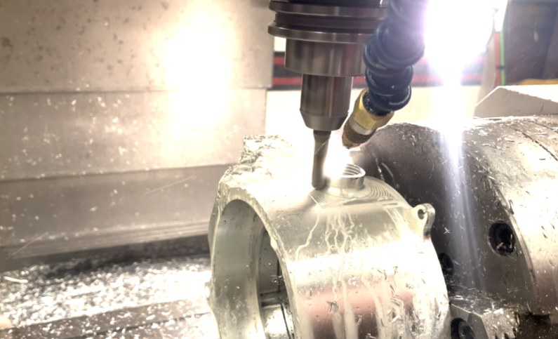
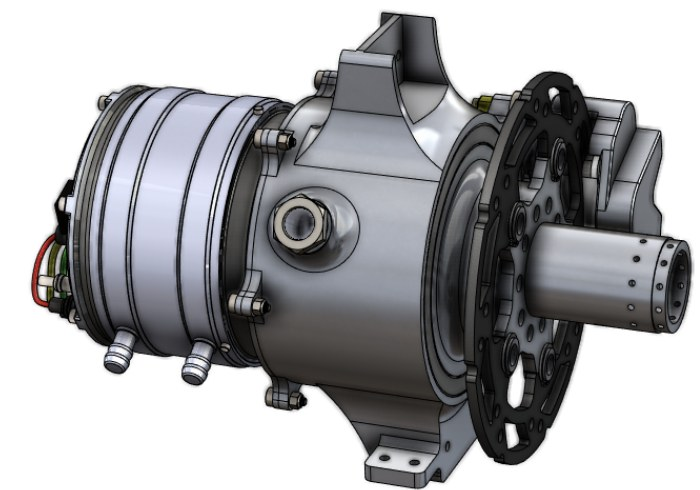
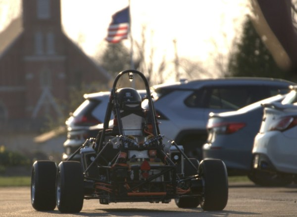
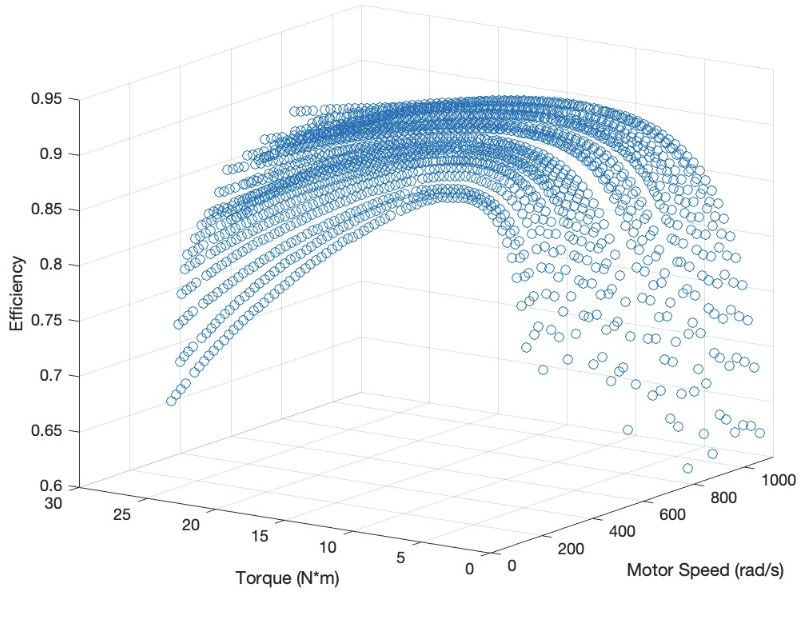
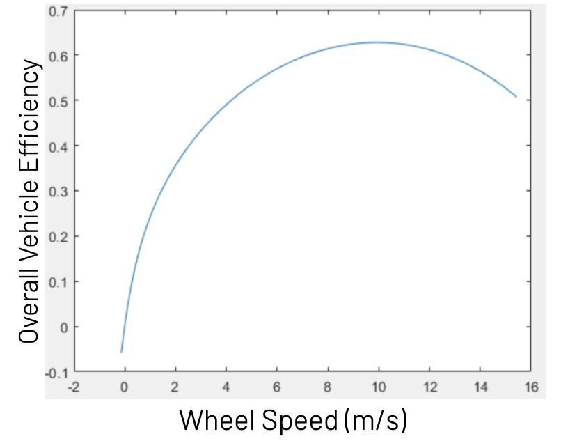

Purdue Electric Racing 2023 Drivetrain
I led the drivetrain sub-team for the 2023 car, which used the second generation of the team's in-hub planetary gearboxes. Each rear wheel is driven by its own Plettenberg Nova 15 motor through a gear reduction packaged inside the upright.

The design was boxed in from the start. The budget meant keeping the 2022 motor, and its 18 mm keyed shaft set hard limits on the size of the gearbox. The team also wanted 2023 to be a stepping stone to four-wheel drive, so the layout was two in-wheel units on the rear: half the drive units of the 4WD car, compatible with it, and a quick way to try 4WD on this chassis after the season. Going back to a single central motor, as the team had used years before, was ruled out because the current team only knew the in-hub system, and switching was the bigger risk.
Most of the choices below follow from one priority: a gearbox that reliably finishes, over one that is optimal on paper.
Choosing the ratio
More reduction means more performance and a harder design, so we needed a way to price each step. The answer was a points sim, a simplified lap simulator that scores autocross, endurance and acceleration for each candidate ratio. Its key simplification is to model only corner exits and straights, where the car is power limited and the gearing matters, and to skip the corners themselves, where grip and vehicle dynamics set the pace.

The sim peaked at 11.5:1, and that ratio could not be built. The motor shaft, brake calipers, track width and gear wear life all limited the gear set, and even the geometric ceiling of about 10:1 gave up around 20 points. The ratio we could build with standard teeth at our safety factors was 8.75:1, about 45 points under the peak. The sim's real job was making that trade visible, so a marginally higher ratio could be judged against the design effort it would cost.
Regenerative braking was left out. With only the rear wheels driven it would have braked the rear axle alone and unsettled the car, it added complexity, and no dynamic event needed it.
Designing the gears
We started where it seemed obvious, with industry gear software (KISSsoft), on the theory that better tools make a better design. At first they did not. With no visibility into the calculations and a shaky grasp of gear fundamentals, we had little confidence in anything it produced. So we went back to the fundamentals and wrote a simple rating script from the AGMA standards for bending strength and surface wear, and used it as a sanity check on the software. That check is what gave us confidence in the design.
The first answer was 9.71:1 with profile-shifted teeth, which met our bending and wear safety factors. Going through it with our gear sponsor and reading the standards more closely showed the catch: the shift had made the teeth pointed, which would mesh roughly and perform poorly. Back on a standard tooth profile, the best ratio that met the safety factors was 8.75:1.


Wear, not bending, was the limit. Across how many gears share the torque and how many 22 km endurance runs the gears must survive, the bending safety factor stayed above 1, mostly between 1.5 and 2.5, while the wear safety factor sat between about 0.85 and 1.1. That is why gear wear is the first thing on the test plan below.
The rest of the analysis matched the method to the part. Bolts, the snap ring and the retaining pin were sized with spreadsheets, first principles and simple beam models. The upright and planet carrier, with geometry too complex for that, went through FEA. Bearing life followed SKF's own method. And because every year's team inherits the design, we packaged the gear, shaft and bearing analysis as MATLAB tools the next team could rerun against their own goals.
Making it

Manufacturing was planned around the shop and budget we had. The hub is mostly lathe work, with the lightening and holes finished on the mill. The planet carrier takes three tools. The gears use a standard module and profile so they could be made outside. The upright was the hard part: 14 tools, tight access, and a fourth axis installed on the mill to reach all of it, which pushed past what we knew about multi-axis machining.
Assembly design started from a 2022 failure. That gearbox located the sun gear on the shaft with an axial bolt; the bolt backed out in testing and destroyed a gear set. So the 2023 gearbox keeps threaded fasteners out of the gear train wherever possible. The sun gear is locked by a pin, held with e-clips, to a part threaded into the shaft. The ring gear has lugs that drop into the upright with a clearance fit, and a snap ring holds it against a shoulder, with no screws at all. We made the tooling too: a wrench that stops the hub turning while bolts are torqued, and locating jigs for pressing in bearings. Cooling lines were routed by comparing parallel and series layouts, and held by purpose-made clips instead of zip ties.


Fitting it to the car

The gearbox had to agree with three other systems. For the battery, the pack was sized from the 2022 car's measured efficiency to finish endurance without tripping the battery management system's voltage limit, and the motor controllers and motor orientation were placed for the shortest cable runs and the lowest cable inductance. For vehicle dynamics, a plane-based modelling approach kept the drivetrain inside the suspension clearance envelope in every position, and mounting the brake calipers on adapter plates freed the rotor size from the size of the upright.
For cooling, the pump was sized from measured head losses through the motors, radiators and tubing. The radiator, measured at 66.7% of the maximum possible heat transfer, was big enough to cool passively at the car's average power. Fan mounts went in anyway, in case testing showed it could not keep up with the peaks.
Testing
There was no dyno, so system testing happened on track. Data from a mock acceleration run confirmed the manufacturer's motor efficiency data, and explained something less obvious: why a car with fewer driven wheels needs a bigger battery. With only two motors the car accelerates more slowly, so the motors spend longer at low speed and high torque, where they are least efficient. Overall vehicle efficiency peaks a little over 60%.


The test plan went after the 2022 car's problems directly:
- Driveline numbers. Compare speed, torque, power and efficiency from track data against the manufacturer's data and our predictions, with a dyno rig as the long-term fix.
- Misalignment. The 2022 gearbox orbited in the wheel. Spectral analysis of the noise to find a bad gear mesh, and wear checks by eye and by looking for metal in the oil.
- Assembly and packaging. The early result was fewer screws, a shorter and lighter assembly, and a motor that slides into place without resistance.
The plan also called for logging gearbox oil and motor temperatures throughout, since torque vectoring can load one motor harder than the other for a whole lap.